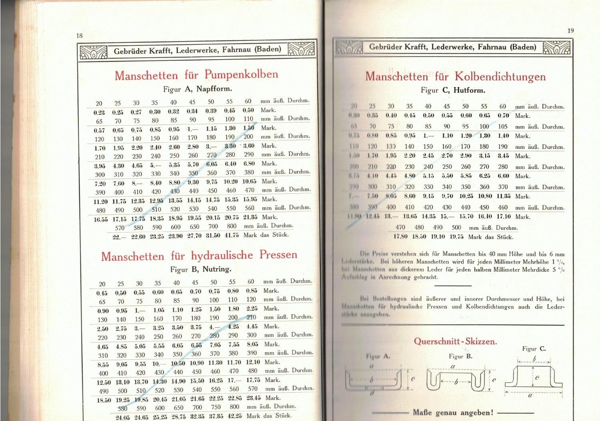
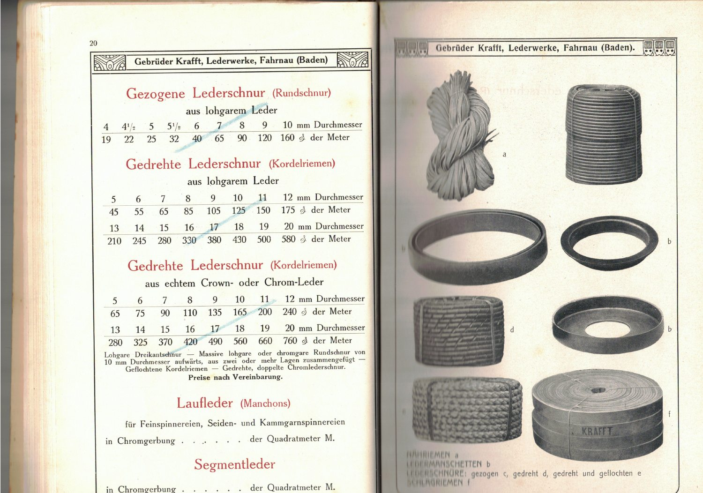
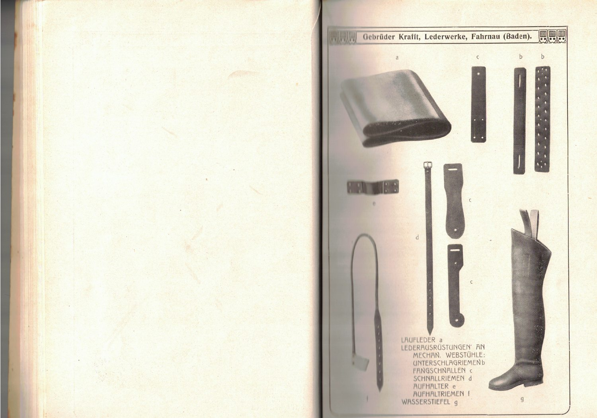
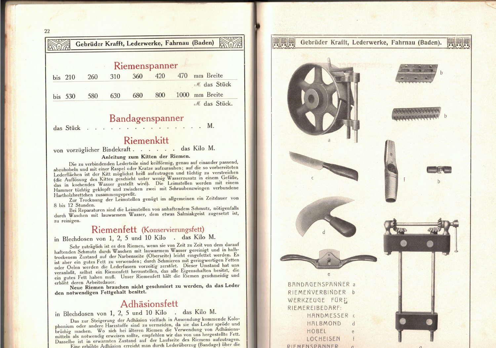
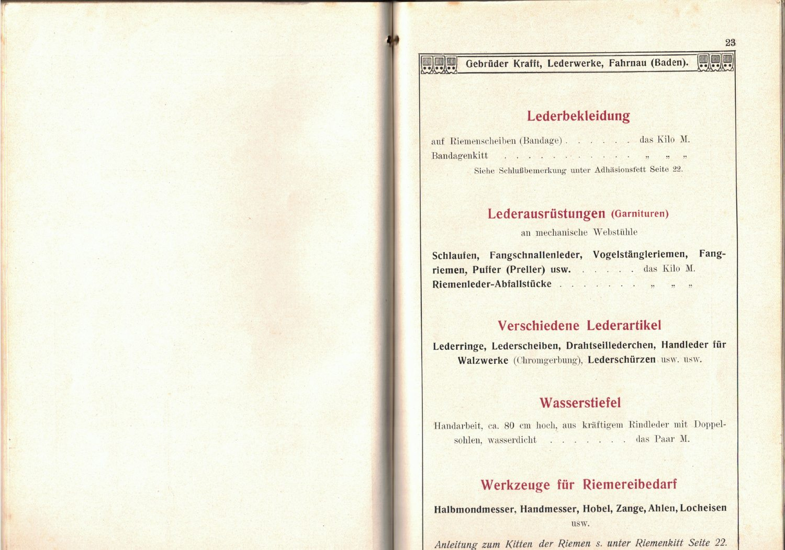
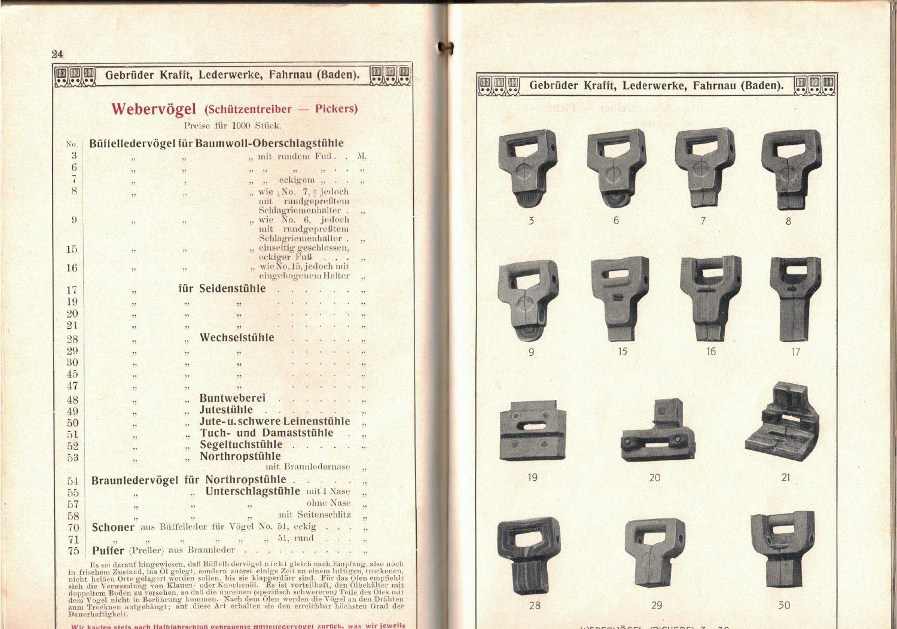
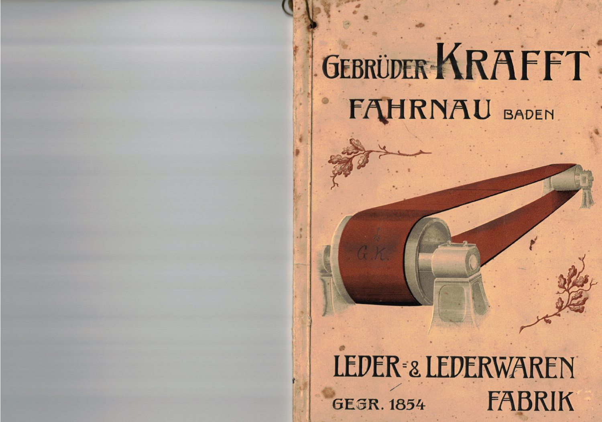

Manschetten & Dichtungen
Die Preisliste führt Manschetten für Pumpenkolben, hydraulische Pressen und Kolbendichtungen. Form und Abmessungen richteten sich nach dem jeweiligen Einsatz.
Manschetten, Lederschnüre, Dichtungen und Spezialartikel: Die Lederwerke Gebrüder Krafft in Fahrnau fertigten weit mehr als Schuhe und Treibriemen.
Die Produkte entdecken
In Fabriken erfüllte Leder zahlreiche Aufgaben: Es dichtete bewegliche Maschinenteile ab, verband Komponenten, schützte Oberflächen und wurde für besonders beanspruchte Bauteile verarbeitet.
Die Preisliste der Gebrüder Krafft von 1913 macht diese Vielfalt greifbar. Diese Ausstellung zeigt ausgewählte Artikel anhand der zeitgenössischen Originalseiten. Sie unterscheidet zwischen den Angaben des Katalogs und ergänzenden technischen Erläuterungen.

Die Preisliste führt Manschetten für Pumpenkolben, hydraulische Pressen und Kolbendichtungen. Form und Abmessungen richteten sich nach dem jeweiligen Einsatz.
Gezogene und gedrehte Lederschnüre sowie weitere Lederartikel gehörten zum Sortiment. Der Katalog nennt verschiedene Ausführungen und Durchmesser.

Die Bildtafeln dokumentieren vielfältige zugeschnittene und geformte Lederteile für technische und gewerbliche Zwecke.

Riemenspanner, Verbinder, Kitt und Werkzeuge unterstützten Montage, Verbindung und Instandhaltung von Lederriemen.

Unter anderem werden Lederringe, Lederscheiben, Lederschürzen und Wasserstiefel aufgeführt. Der Katalog zeigt, wie breit das technische und gewerbliche Angebot war.

Schützentreiber für mechanische Webstühle bildeten einen eigenen Produktionszweig. Ihre besondere Geschichte dokumentieren wir auf einer separaten Webseite.
Die Ausgabe trägt den Titel Preis-Liste für technische Leder und Lederwaren und stammt aus den Lederwerken Gebrüder Krafft in Fahrnau (Baden).
Sie dokumentiert nicht nur Produktnamen, sondern auch Abmessungen, Ausführungen, Preisangaben und Abbildungen. Gerade diese Details machen sie zu einer wichtigen Quelle für die Geschichte industrieller Lederverarbeitung.

Die Abbildungen sind historische Originalscans. Zum Vergrössern anklicken.
Die technischen Lederwaren von Krafft zeigen, wie eng Gerberei, Maschinenbau und Fabrikbetrieb miteinander verbunden waren.
Diese Seite konzentriert sich auf das belegte Sortiment und seine technische Funktion. Die Geschichte der Webervögel mit ihrem Bezug zur mechanischen Weberei wird bewusst getrennt behandelt; die Entwicklung der Ledertreibriemen besitzt ebenfalls eine eigene Dokumentation.
Hauptquelle: Gebrüder Krafft, Lederwerke Fahrnau (Baden): Preis-Liste für technische Leder und Lederwaren, Ausgabe 1913. Verwendete Katalogseiten: 18–24 sowie die dazugehörigen Bildtafeln.
Ergänzende Quelle: Gebrüder Krafft: Jubiläumsschrift zum 75-jährigen Bestehen, 1854–1929. Sie beschreibt unter anderem die Entwicklung verschiedener Gerb- und Fertigungszweige.
Die historischen Produktbezeichnungen werden möglichst quellengetreu wiedergegeben. Wo Funktionen allgemein erläutert werden, handelt es sich um technische Einordnung und nicht um einen Nachweis konkreter Lieferungen an einzelne Betriebe.
Hinweis zu den Abbildungen: Sämtliche hier gezeigten historischen Produktbilder stammen aus dem Krafft-Katalog von 1913. Keine der Abbildungen ist eine moderne Nachbildung.